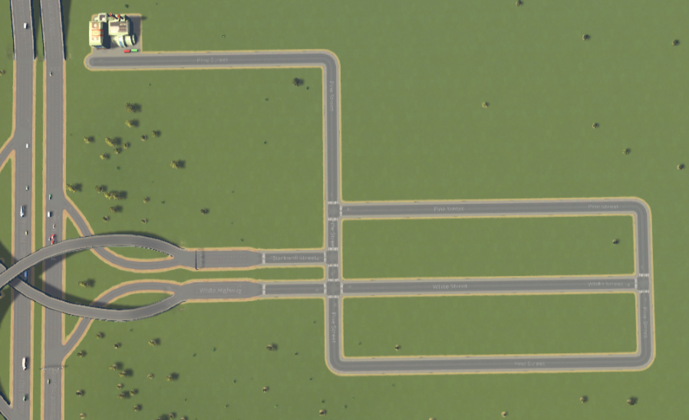
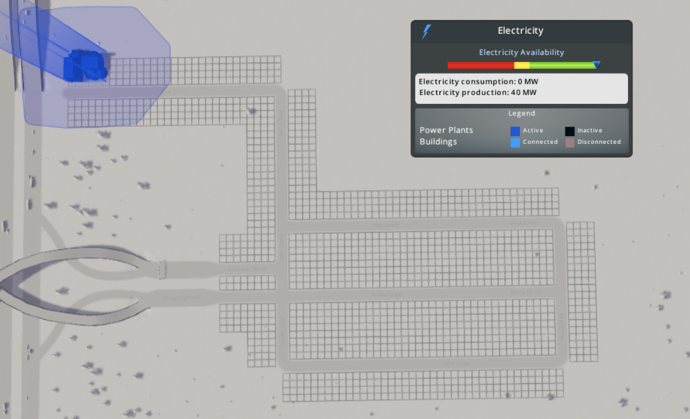
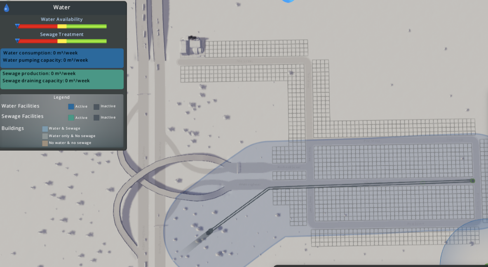
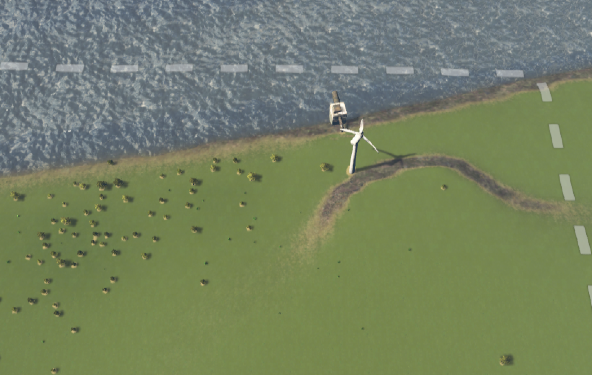
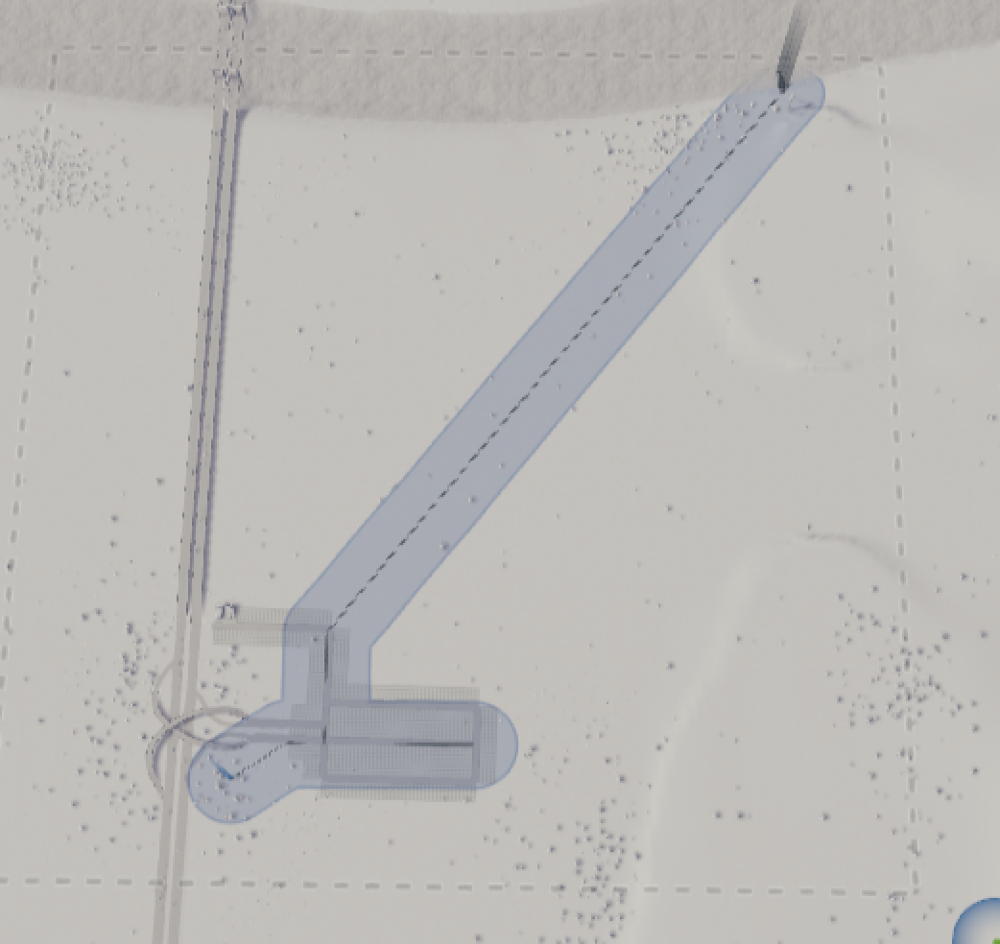

Our residents would like some commerce! (that means they need to buy some things)
Ok! You've got CitySkylines and you're ready to start your first city! Let's go step by step through the first things you should do.
To start, build a road.
Click the circle at the bottom of the screen that has a road inside it.
Our residents would like some commerce! (that means they need to buy some things)
Build your first road by clicking on the end of the highway that has an arrow pointing into your city. [inside the dotted lines].

After you click it, drag to the place you want the end of the road to be.
There are a couple things to think about when building roads. First of all, you're going to need to get people off the highway and back onto it. You can see that the highway entrancee and exits are both one way. You'll probably want to use 2-way roads for most of your initial city. I like to start off simple and do some big rectangles.

To be most efficient, make them straight roads and make them the size so that the small little boxes alongside them don't overlap. What are those little boxes? You're about to find out in "Zoning"
Next to the road, there will be zones.Click on the zoning tool [the circle next to the road circle that has four squares in it] and click next to the road.

The space next to the road will fill up with light green squares. Light green is low density residential, light blue is low density commercial, yellow is industry, dark green [high density residential], which, like dark blue [high density commercial] and lightest blue [office] will not be unlocked. Click on your desired zone to be able to place whatever it is down.
Your citizens will need electricity. The two starting options for getting electricity are wind tubines and coal power plants. Use a coal power plant to get started with your city.
 See the blue area around the power plant? Anything inside that zone will now have power! If you want to build things further away, you'll need to run a powerline, but you don't need to run power between each house. Houses that are close to each other will kind of share power. Maybe they build underground power lines or something.
Your citizens will also need water and plumbing services. If you see a water source within your city limits you should use a water pumping station and a water drain pipe to get water in and out of your city.
Be careful not to put your water pumping stations downstream of your water drain pipes, otherwise the water will get polluted and make your citizens sick.
For our little city, let's use a water tower to get fresh water. You can use a water pump too, but that would need to go on a body of water and our nearest river is far away.
First we'll place the water tower and then we'll make some basic pipes.
But what about waste water? While later in the game, you'll be able to build a water treatment plant, which will help filter the waste water, for now, you can only build a water drain pipe. This will have to go into the river. Gross! Let's build it way over on the right hand side because the river flows that way. That will mean less pollution along the river bank.
 Our drain will need electricity. We have two choioces here, we can either run a big long power line, or we can put in a windmill to power it. Let's choose the windmill.
Finally, we just need to run the water pipes. Connect the water tower, the drain pipe, and run a pipe out where you are going to start your buildings.
Ok, our city is ready to rock! It's time to get some people. Read all about it in Moving In.